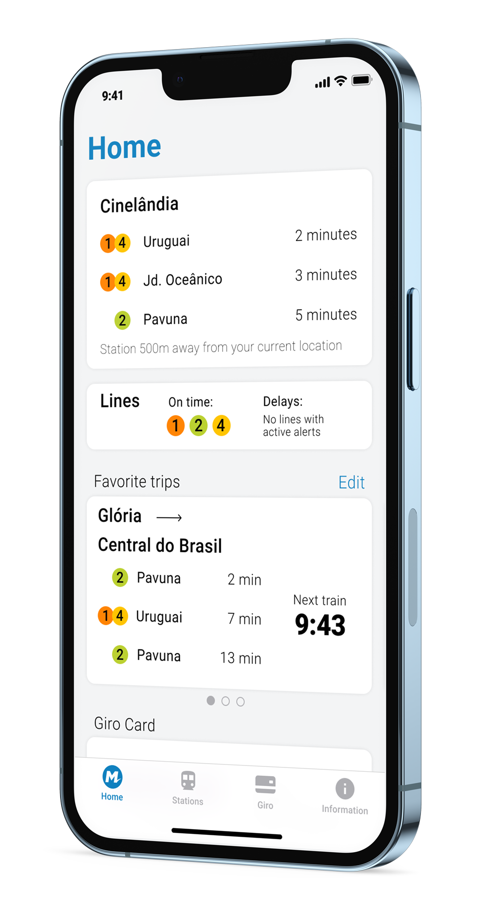
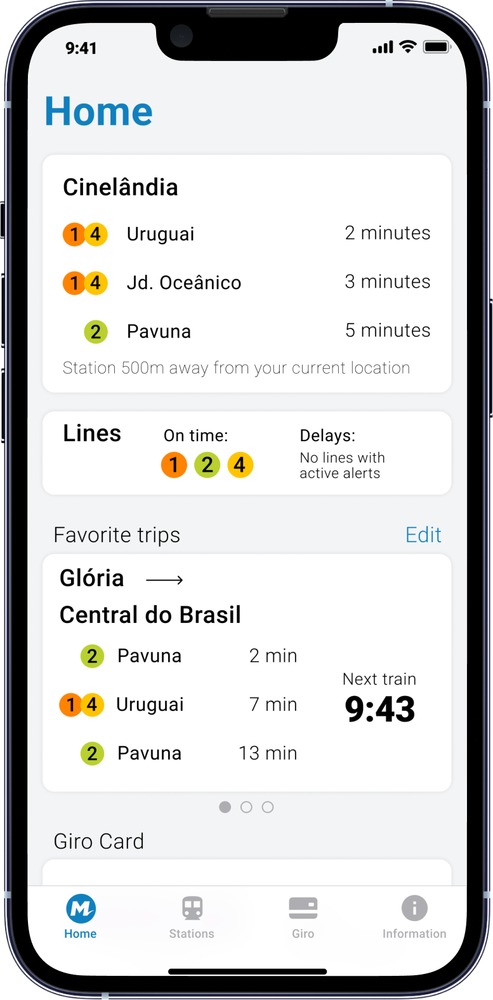
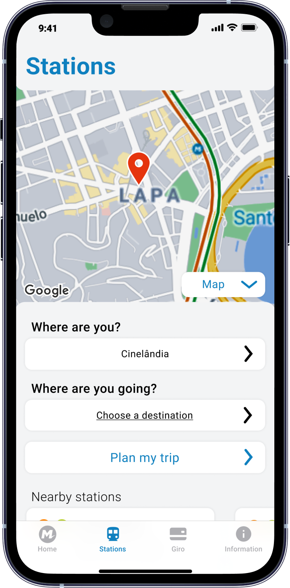
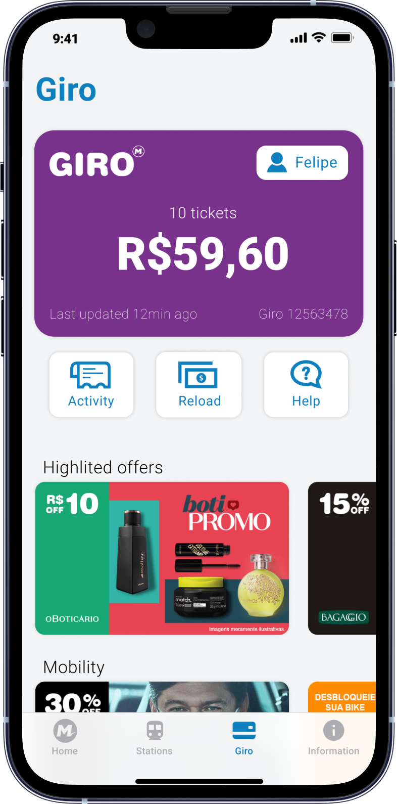
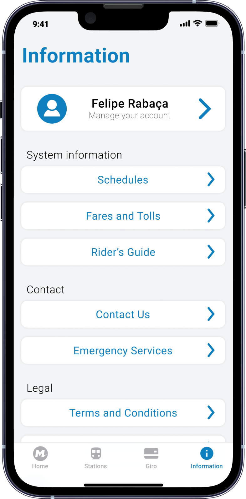

Metrô Rio is the redesign of the Rio de Janeiro subway app. The main goal of this project was to cut down the users' interactions to the minimum amount possible, enabling riders to access all the information needed without losing time.
Interactive prototype - Open in a new tab
The all-in-one app to navigate the subway
- 🚇Maps and schedules
- 📍Nearby stations
- 💳Reload your card
- ℹ️Up-to-date information

Everything is 3 taps away.
Your location is the key
The app uses your current location to set the closest station to you, providing always updated information based on where you are.

The first station in the home screen is always the closest station to the user, providing a quick glance at the next trains and an easy shortcut to see information about the station they are most likely to use.

The closest station to the user is pre-defined in the "Where are you?" field. As most users will use the station closest to them, this reduces the number of interactions with the app, making it easier and quicker to be used.

Giro is the payment method for the subway. The user can save their and their family's card to keep track and reload the balance, while also seeing many promotional offers that are available from partner companies.

The information screen displays useful data such as the system operation schedule and contact phone numbers from both the subway and emergency services. This screen is also where the user can manage their account.

Credits
Designed by Felipe Rabaça